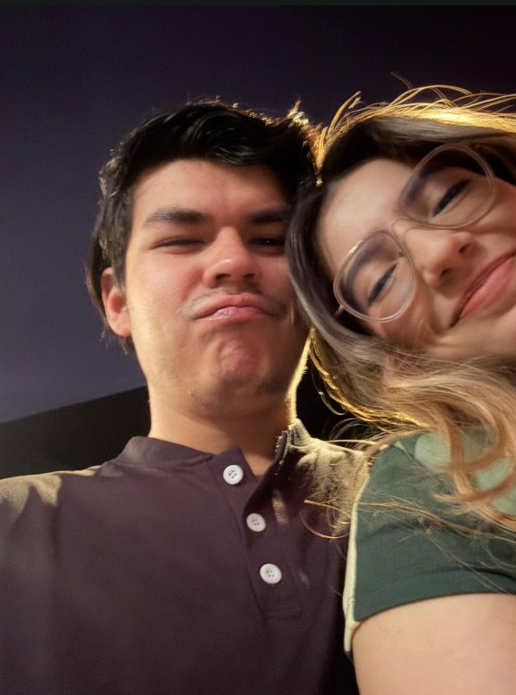
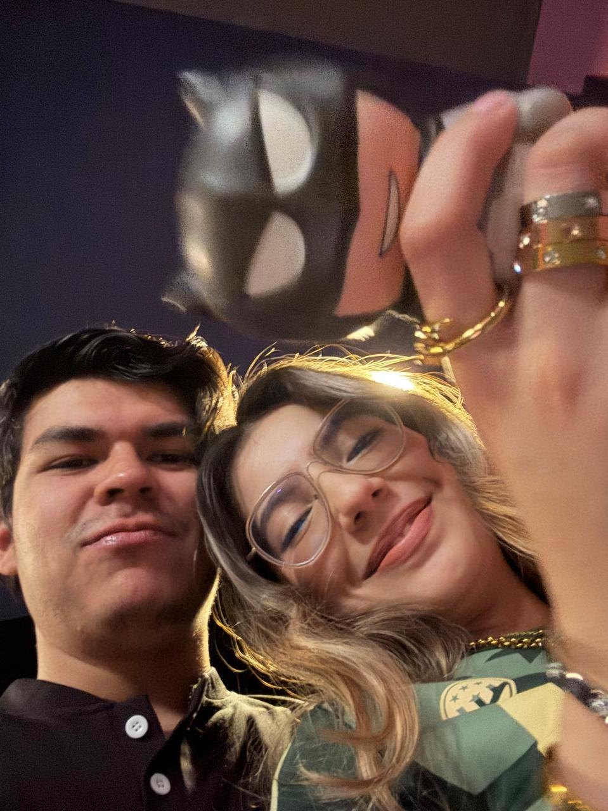
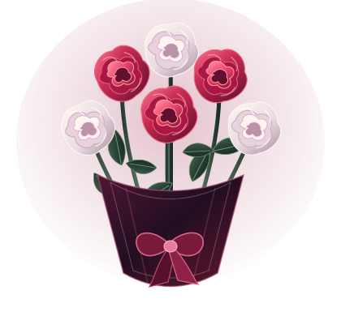

léelo cuando quieras, mi amor
Quiero dejarte algo que puedas
leer las veces que quieras…


Mi Amor...
Siempre me pasa que cuando quiero explicarte de verdad lo que significas para mí, termino pensando que ya te lo he dicho mil veces. Que eres el amor de mi vida, que me haces feliz. Y sí, te lo repito porque es verdad; pero nunca siento que sea suficiente.
Lo que más me gusta de ti no cabe en una listas. Me encanta que seas tan audaz, talentosa, auténtica y chistosa. Tienes una forma de mirar las cosas y de hacerlas que no se parece a la de nadie. A veces me haces reír cuando ni siquiera sabía que necesitaba reírme. Otras veces te escucho hablar de algo que te apasiona y me quedo pensando en lo bonita que es tu cabeza y en todo lo que eres capaz de hacer. No quiero que nunca sientas que tienes que parecerte a otra persona. La mujer que eres, con tus ocurrencias y tu carácter, es precisamente la que amo.
Y hay algo que no quiero que se me olvide decirte. Aun recuerdo aquella conversación cuando empezaste a practicar arqueria. Me contabas que no podías abrir el arco, y mira ahora, practicando a 18 metros. Puede parecer una cosa pequeña si alguien solo mira el número, pero yo recuerdo el principio. Lo mucho que te has esforzado para llegar a donde estás.
ME ACUERDO DE CUANDO EMPEZASTE
De “no puedo levantarlo”
a 18 metros.
Eso eres tú, Amor. No porque tengas que demostrarle algo a alguien, sino porque cuando algo te importa, te comprometes y te esfuerzas. Admiro tu disciplina, tu paciencia y esa fuerza que no es solo física, también está en tu cabeza y en tu carácter.
Me siento orgulloso de ti, de verdad. Ojalá cuando dudes de ti puedas verte un poquito como yo te veo. Y recuerda, también puedes descansar. Aqui siempre tendras un admirador Tu Fan #1.

3 BLANCAS · 3 ROJASEL RAMO CON EL QUE TE PEDÍ SER MI NOVIA
Seis rosas,
paz, amor y pasión.
Me acuerdo de ese ramo porque fue el que llevaba cuando te pedí que fueras mi novia. Eran seis rosas, tres blancas y tres rojas, lo que quería decirte iba mucho más allá de las flores. Tú me transmites paz, me haces sentir un amor que quiero cuidar y despiertas en mí una ilusión por lo que quiero vivir contigo.
Las blancas me recuerdan la tranquilidad que encuentro a tu lado, las rojas, el amor y la pasión que siento por ti. Y cuando pienso en todo lo que quiero contigo, no hablo solo de los grandes momentos, pienso también en los días normales, en nuestras bromas, en acompañarnos cuando las cosas se ponen difíciles y en la familia que sueño que algún día podamos formar. Aquel ramo marcó el día en que te pedí que fueras mi novia. lo bonito es que, desde entonces, quiero seguir eligiéndote.
Paz, amor y pasión: eso eres tú para mí, amor. ♡
DOS FECHAS QUE GUARDO CON CARIÑO
Antes de ser novios,
ya había algo bonito empezando.
Nuestro primer beso
Estábamos todavía conociéndonos y yo te di aquel beso todo tímido en la cafeteria, con ese miedo de como lo ibas a tomar. Me acuerdo de los nervios que tenía, no sabía qué estaba pensando, pero sí sabía que quería acercarme a ti y robarte ese beso con el que siempre soñe. Ahora miro atrás y veo a ese yo que estaba muerto de miedo y aun así se animó.
El día en que te pedí ser mi novia
Ese día llegó el ramo de seis rosas tres blancas y tres rojas, Las flores fueron parte de ese momento tan hermoso en esa terraza. Aun recuerdo lo asustado que estaba porque estasbas con ese dolor de cabeza y ya no querias salir, pero al final logre convencerte para que salieramos y me dieras la oportunidad de decirte lo que sentía. Y y finalmente pedirte que fueras mi novia. Me siento afortunado de que esa respuesta haya sido si. y pudieramos comenzar esta historia juntos. Y qué bonito que hoy pueda recordar las dos fechas y todo lo que hemos ido construyendo y aun nos faltan mas momentos que vivir.
11 de abril: el beso que me animé a darte. 11 de julio: el comienzo oficial de nuestra historia. ♡
También sé que el trabajo a veces te deja agotada. Sé que hay días llenos de estrés y aun así buscas ese ratito para hablar conmigo. No lo tomo como algo pequeño. Me importan esos minutos, tus mensajes, que me cuentes cómo te fue, incluso las cosas simples del día. Quiero aprender a cuidarte también de esa forma ser alguien con quien puedas soltar un poco el peso, decir que tuviste un día horrible, reírte de cualquier tontería o estar en silencio sin tener que fingir que todo está bien. Me gusta que seas mi hombro, pero quiero que también sientas que el mío está para ti.
Antes de ti había muchas cosas que no sabía ordenar dentro de mí. Tenía batallas que me costaba entender y días en los que no sabía muy bien cómo llevarme a mí mismo. Cuando llegaste a mi vida tu compañía me hizo sentir acompañado y me recordó que podía seguir creciendo. Me apoyaste, me escuchaste y me diste cariño en una etapa en la que lo necesitaba mucho. Nunca quiero olvidar lo que significó para mí. Y quiero que sepas que sigo trabajando en mí, no para ser perfecto, sino para estar bien conmigo y construir contigo algo sano, bonito y real.
A veces me pregunto qué hice para tener tanta suerte contigo. Hay días en los que me cuesta verme con buenos ojos y me pregunto qué ves tú en mí. Pero no quiero dejar que mis inseguridades hablen por encima de lo que sí sé. tú estás aquí, yo estoy aquí, y lo nuestro se construye con lo que hacemos cada día. Me equivoco, tengo mucho que aprender y quiero demostrarte que puedo escuchar, corregir, cuidar y estar presente. No quiero que tengas que adivinar cuánto te amo; quiero que puedas sentirlo en mis acciones, en cómo te trato y en cómo te acompaño.
Cuando pienso en mi futuro, te imagino ahí. Me hace ilusión pensar que algún día me voy a casar contigo y que construiremos una familia. Pero también me emocionan las cosas pequeñas. llegar al final del día y contarnos lo que pasó, nuestras bromas que nadie más entiende, verte emocionarte por algo que te gusta, celebrar tus logros, hacer planes que salgan bien y otros que terminemos improvisando. Quiero una vida en la que sigamos eligiéndonos, aprendiendo y cuidando ese lugar que hacemos cuando estamos juntos.
No hice esta carta porque crea que me faltan palabras bonitas, la hice porque a veces, incluso cuando te digo todo esto, me sigue quedando algo guardado. Quería dejarte algo que puedas abrir un día cualquiera, cuando estés cansada, cuando me extrañes o cuando simplemente te quieras recordar cuánto te amo. Quiero que recuerdes que me fijo en ti. Que escucho tus historias. Que admiro tus esfuerzos. Que me siento orgulloso de la mujer que eres.
PARA ACOMPAÑAR ESTA CARTA
Tengo Una canción de tu artista favorito.
Un montón de cosas que siento.
Elegí “As You Are” — The Weeknd, para que te acompañe este, tu pequeño espacio. No hace falta que una canción hable por mí, solo quería que estuviera aquí para que sepas que estuve pensando en ti.
Pulsa para escucharlo, sin salir de la carta.
UNA CANCIÓN PARA MARCELA
As You Are
The Weeknd
Guardada aquí, solo para este momento.
Pulsa reproducir y deja que la canción acompañe tu carta.
Te amo Marcela. No siempre voy a saber decirlo de la manera más bonita, pero quiero pasar la vida intentando demostrarlo de la manera más honesta. Gracias por ser tú y por compartir conmigo esta parte de la vida. Ojalá tengamos muchísimos capítulos más.
Con todo mi amor,
Aun me pregunto como tuve tanta suerte contigo. ♡
No tienes que resolverlo todo hoy, Puedes ir paso a paso. Yo estoy orgulloso de ti también en los días en los que sientes que avanzaste poquito.
Si algún día sientes que no avanzas, acuérdate de los 18 metros. No como una obligación de tener que superarte siempre, sino como prueba de que puedes comenzar sin saber cómo y aun así descubrir hasta dónde llegas. Y si un día no tienes fuerzas para nada, también está bien. No tienes que ser fuerte todo el tiempo. Yo te quiero en todos esos días también.